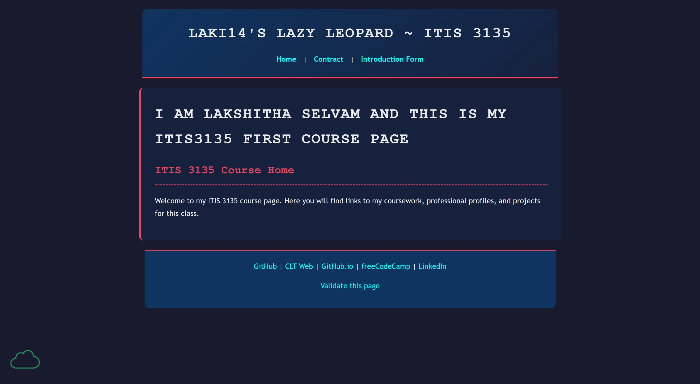

Peer Evaluation 2
Selvam, Lakshitha

Website Checklist Evaluation
Note: The Client Project Part 2 files were not accessible at the provided URL at the time of this review. The following evaluation reflects the current state of the live site.
- Design & Layout (CRAP Principles):
- Contrast: Unable to evaluate (No project files found).
- Repetition: Unable to evaluate (No project files found).
- Alignment: Unable to evaluate (No project files found).
- Proximity: Unable to evaluate (No project files found).
- Functionality & Navigation:
- Does the navigation bar appear in a consistent position? N/A - The pages are currently missing.
- Do all links work correctly? No, the link to the client project appears to be broken or the repository is empty.
- Content & Content Structure:
- Is the purpose of the website immediately clear? No, because the content is not currently live.
- Are there any spelling or grammatical errors? Unable to evaluate.
- Do the pages include actual content? No content was found.
- Technical Requirements (Part 2 Specifics):
- Does the layout successfully utilize a
<header>,<main>, and<footer>? Unable to inspect the code for the client project. - Are the HTML and CSS correctly separated into different files? Unable to evaluate.
- Does the layout successfully utilize a
Constructive Feedback
- Start: Start by double-checking your GitHub Pages deployment settings. Make sure your `client_project` folder is pushed to your main branch and the file names (like `index.html`) are completely lowercase so the server can read them.
- Stop: Stop leaving broken links on your main course page. Always test your URLs in an incognito window after you push to GitHub to ensure everyone else can see your work!
- Continue: Continue working on getting the foundational setup pushed! Once the files are successfully live, you'll be in great shape to keep building.